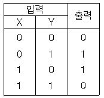

정보기기운용기능사 (2003-07-20 기출문제)
1과목: 전산 기초 이론
1. 집적회로(Integrated circuit)를 기본소자로 사용한 전자계산기의 세대는?
- 3세대
- 2세대
- 1세대
- 4세대
(정답률: 87%)

2. 컴퓨터에서 인간의 눈과 귀에 해당하는 부분은?
- 입력장치
- 연산장치
- 출력장치
- 기억장치
(정답률: 79%)
3. 프로그래밍(programming)언어에 해당되지 않는 것은?
- Compiler 언어
- General 언어
- Machine 언어
- Assembly 언어
(정답률: 58%)
4. 제어장치에 대해서 잘 설명한 것은?
- 다량의 데이타를 기억하여 보관할 수 있다.
- 여러 장치의 입·출력 동작을 제어한다.
- 다량의 데이타를 읽고, 출력 및 계산을 할 수 있다.
- 자기잉크 문자를 판독할 수 있다.
(정답률: 74%)
5. 다음 진리치표에 해당하는 논리 게이트(logic gate)는 어느 것인가?

- AND
- OR
- NOR
- XOR(exclusive - OR)
(정답률: 66%)
6. 오퍼레이팅 시스템(operating system)에서 제어프로그램에 해당되지 않는 것은?
- 감시 프로그램
- 언어 번역 프로그램
- 데이터 관리 프로그램
- 작업 관리 프로그램
(정답률: 80%)
7. 10진수 (+159)10의 2진화 10진형식(Packed Decimal format) 표현으로 맞는 것은?
- 0001 0101 1001 1100
- 0001 0101 1001 1101
- 0001 0101 1001 1001
- 0001 0101 1001 1010
(정답률: 36%)
8. 어떤 문제를 해결하기 위한 절차와 방법을 무엇이라고 하는가?
- 처리
- 방법
- 절차
- 알고리즘
(정답률: 74%)
9. 전자계산기에서의 비교판단기능을 담당하는 기능은?
- 논리연산기능
- 산술연산기능
- 제어기능
- 입출력기능
(정답률: 68%)
10. 엔코더(Encoder)에 대한 설명이다. 다음 중 가장 옳은 것은 무엇인가?
- 입력 신호를 2진수로 부호화하는 회로이다.
- 출력 단자에 신호를 내보내는 회로이다.
- 2진 부호를 10진수로 변환하는 회로이다.
- 해독기를 말한다.
(정답률: 62%)
2과목: 정보 기기 운용
11. 10[Ω]의 저항에 5[A]의 전류가 흐를때 전력은?
- 100[W]
- 50[W]
- 500[W]
- 250[W]
(정답률: 36%)
12. 팩시밀리의 통신방식중 기능별 구성 요소와 관계 없는 것은?
- 주사의 조건
- 동기유지의 조건
- 자동송신기의 조건
- 광전변환의 조건
(정답률: 47%)
13. 디스켓 사용시 주의점이 아닌 것은?
- 자석을 가까이 하지 않도록 한다.
- 디스켓은 가능한 10 ∼ 40℃ 사이의 온도로 보관한다.
- 헤드 접촉부를 천으로 항상 청결하게 닦는다.
- 디스켓이 휘지 않도록 한다.
(정답률: 78%)
14. 사무자동화 기기의 정보처리기술과 관계가 적은 것은?
- 고속 디바이스
- 인공지능
- 고기능 프로세서
- LAN
(정답률: 61%)
15. 워드프로세서의 구성중 입력장치와 거리가 먼 것은?
- 스캐너(scanner)
- 키보드(keyboard)
- 5.25inch disk
- 광학문자인식장치(OCR)
(정답률: 71%)
16. 입력감지판에 그려지는 선이나 그림을 CRT에 나타내는 입력장치로서 주로 공학, 건축, 의학분야에 사용되는 것은?
- 마우스
- 라이트팬
- 디지타이저
- 조이스틱
(정답률: 79%)
17. 컴퓨터실이나 자기매체 보관실에 화재가 발생했을 때 사용할 수 있는 소화기로 가장 적당한 것은?
- 하론가스 소화기와 스프링쿨러
- 이산화탄소 소화기와 ABC 소화기
- 이산화탄소 소화기와 하론가스 소화기
- ABC 소화기와 프레온가스 소화기
(정답률: 80%)
18. 100[V], 500[W]의 전열기가 있다. 이 전열기의 저항은?(오류 신고가 접수된 문제입니다. 반드시 정답과 해설을 확인하시기 바랍니다.)
- 15[Ω]
- 5[Ω]
- 10[Ω]
- 20[Ω]
(정답률: 46%)
19. 다음 중 비디오 텍스에 대해서 가장 옳게 설명한 것은?
- 데이터 베이스 내의 도형, 원문형태의 데이터를 가정의 TV수상기를 통하여 볼 수 있는 시스템
- 전송된 정보를 가정의 전화기를 통하여 들을 수 있게 해주는 시스템
- 인쇄, 원문작성 등을 하는 시스템
- 원문이나 도형의 복사 등을 할 수 있는 시스템
(정답률: 72%)
20. 다음 중 컴퓨터 바이러스에 대한 예방책이 아닌 것은 ?
- 바이러스 퇴치는 자신의 컴퓨터에 바이러스를 심어서 퇴치 연습을 한다.
- Command.com의 파일 속성을 읽기 전용으로 만들어 준다.
- 새로운 프로그램을 실행시킬 때 반드시 바이러스 퇴치 프로그램으로 검사한다.
- 하드디스크가 있는 컴퓨터는 반드시 하드디스크로 부팅시킨다.
(정답률: 79%)
21. 다음 중 전자계산기실의 조명 기준으로 가장 적합한 룩스(Lux)는?
- 500
- 50
- 2000
- 1000
(정답률: 79%)
22. 다음 중 위성통신의 특징이 아닌 것은?
- 전파지연과 강우감쇠
- 동보성
- 저용량, 고품질의 전송
- 광역성
(정답률: 54%)
23. 저항이 5[Ω]인 도체에 10[A]의 전류를 1분간 흘렸을 때 발생하는 열량은 몇[kcal]인가?
- 36
- 72
- 3.6
- 7.2
(정답률: 46%)
24. 상호 통신시 송신측의 펜(지시침)의 움직임에 따라 상대방의 수신장치에 연결된 펜(지시침)과 기록장치가 같이 동작하여 송신측과 의사 전달이 되도록 만든 시스템은?
- 텔레 텍스
- 비디오 텍스
- 텔레 마케팅
- 텔레 라이터
(정답률: 38%)
25. 건전지를 n개 병렬로 연결하였을 때 올바른 설명은? (단, r : 건전지 내부저항)
- 전압은 일정하고 내부저항은 n/r 배이다
- 전류의 용량은 n배이고 내부저항은 n/r 배이다
- 전압은 일정하고 내부저항은 r/n 배이다
- 전류의 용량은 일정하고 내부저항은 r/n 배이다
(정답률: 54%)
26. CATV(종합유선방송)와 관계 없는 것은?
- 쌍방향 전송
- 원격 검침
- 방범 방재 서비스
- 근거리 통신망
(정답률: 46%)
27. 사무자동화(OA)의 시스템과 관련이 없는 것은?
- 일정 관리 시스템
- 전자 우편 시스템
- 컨베이어 시스템
- 전자 결재 시스템
(정답률: 60%)
28. 해킹의 예방에 대한 설명으로 적합하지 않는 것은?
- 정보 보호 관리 체계를 구축한다.
- 외국과의 긴밀한 협력 체제를 구축한다.
- 해킹 범죄는 민사상 책임만을 물어야 한다.
- 사고 발생 시 적극 대처를 위해 조직 육성한다.
(정답률: 73%)
29. 파형율과 파고율이 같고 값이 1인 파형은?
- 사인파
- 반파정류파
- 삼각파
- 직사각형파
(정답률: 39%)
30. 다음중 충격 방식의 프린터는?
- 잉크젯 프린터
- 도트 프린터
- 레이저 프린터
- 열전사 프린터
(정답률: 71%)
3과목: 정보 통신 일반
31. 정보통신회선을 멀티포인트(multipoint)로 구성할 때의 특성 설명으로 적합하지 않는 것은?
- 회선경비가 증가한다.
- 제어 소프트웨어가 간단하다.
- 포트수가 증가한다.
- 변복조기의 대수가 증가한다.
(정답률: 60%)
32. 정보의 전송속도와 가장 관계가 깊은 단위는?
- ns(nano second)
- bpi(bit per inch)
- bps(bit per second)
- ms(milli second)
(정답률: 84%)
33. 광통신 방식의 특징 중 옳지 않은 것은?
- 저손실이다.
- 경량, 세심이다.
- 광대역이다.
- 전력유도가 많다.
(정답률: 68%)
34. 음성대역의 통신에 영향을 거의 미치지 않는 현상은?
- 누화(cross talk)
- 군지연(Group Delay)
- 위상지연
- 고조파잡음
(정답률: 38%)
35. 통신 프로토콜의 3가지 방식에 해당되지 않는 것은?
- 비트방식
- 폴링방식
- 문자방식
- 바이트방식
(정답률: 68%)
36. OSI 7계층에서 하위계층은 어떤 계층들인가?
- 세션계층, 표현계층, 네트워크계층
- 물리계층, 데이터링크계층, 네트워크계층
- 데이터링크계층, 트랜스포트계층, 세션계층
- 물리계층, 트랜스포트계층, 표현계층
(정답률: 85%)
37. 음성과 비음성 정보통신서비스를 통합시킨 종합정보통신망에 해당하는 것은?
- ISTN
- VAN
- ISDN
- LAN
(정답률: 73%)
38. 통신제어장치의 역할이 아닌 것은?
- 회선접속 및 전송에러 감시
- 통신회선과 중앙처리장치의 결합
- 데이터의 교환 및 축적제어
- 중앙처리장치와 데이터 송수신제어
(정답률: 40%)
39. 기존의 통신사업자로부터 통신회선을 빌려 컴퓨터나 정보통신단말기를 조합 연결하여 통신망(network)을 구축하고 새로운 기능을 부가해 제3자에게 서비스하는 통신망은?
- ISDN
- LAN
- VAN
- PSTN
(정답률: 56%)
40. 정보화사회의 특징으로 적합하지 않은 것은?
- 에너지의 비중보다 정보의 비중이 더 커진다.
- 컴퓨터의 이용이 극대화된다.
- 지식관련 산업이 주종을 이룬다.
- 중심산업은 반도체 제조공업이 된다.
(정답률: 71%)
41. 다음 중 디지털 동화상을 압축하는 기술 기법은?
- PCS
- Hypertext
- FPLMTS
- MPEG
(정답률: 83%)
42. 패킷교환방식에 대한 설명으로 옳지 않은 것은?
- 통신망에 의한 패킷의 손실이 있을 수 있다.
- 전송속도와 코드 변환이 가능하다.
- 패킷의 저장 및 전송으로 이루어진다.
- 공중 데이터교환망에는 거의 사용되고 있지 않다.
(정답률: 78%)
43. 데이터통신이 필요한 이유를 설명한 것이 아닌 것은?
- 원격지에 위치한 컴퓨터 사용자를 위하여
- 디지탈방식을 아날로그방식으로 변환시키기 위해서
- 실시간 즉시처리(On-line real time processing)를 위하여
- 데이터 처리기술과 전송기술의 특성을 결합시키기 위하여
(정답률: 65%)
44. 정보통신시스템을 구성하는 기본 요소가 아닌 것은?
- 통신제어장치
- 전송선로설비
- 데이터처리계
- 멀티시스템계
(정답률: 59%)
45. 신호 전력이 P, 잡음 전력이 N, 채널의 대역폭이 W[Hz]인 전송선에서의 채널 용량(channel capacity) C 는?
- C = 2W log2(1 + P/N)
- C = W log2(1 + P/N)
- C = 2W log2(1 + N/P)
- C = W log2(1 + N/P)
(정답률: 58%)
46. 비동기 변복조기에서 가장 많이 사용하는 변조 방법은?
- 단측파대(SSB)변조
- 진폭(AM)변조
- 주파수 편이(FSK)변조
- 위상편이(PSK)변조
(정답률: 58%)
47. " 패리트 비트의 갯수는 코드 효율에 ( )하고, 에러에 대한 보호율에 ( )한다." 다음 문장의 ( )안에 알맞는 것은?
- 비례, 비례
- 반비례, 비례
- 비례, 반비례
- 반비례, 반비례
(정답률: 46%)
48. 통신제어장치의 역할을 가장 알맞게 설명한 것은?
- 카드리더의 상태를 점검한다.
- 테이프의 패리티를 체크한다.
- 컴퓨터의 데이터통신 부분을 관리한다.
- CPU의 처리속도를 조절한다.
(정답률: 68%)
49. 현재 우리나라 이동통신(핸드폰)의 접속방식에 이용되는 CDMA방식은 어떤 방식인가?
- 코드분할다원접속방식
- 주파수분할다원접속방식
- 시분할다원접속방식
- 공간분할다원접속방식
(정답률: 78%)
50. TV 방송망을 통하여 많은 이용자에게 정보를 단일 방향으로만 제공이 가능한 미디어는?
- VIDEOTEX
- TELETEXT
- INTERNET
- EDI
(정답률: 61%)
4과목: 정보 통신 업무 규정
51. 다음 설명 중 적합하지 않은 것은?
- 우리나라의 전기통신은 한국통신사장이 관장한다.
- 전기통신기본법은 공공 복리의 증진에 이바지 함을 목적으로 한다.
- 전기통신역무란 전기통신설비를 이용하여 타인의 통신을 매개하는 것을 말한다.
- 전기통신이란 유선,무선,광선 및 기타의 전자적 방식에 의하여 송신,수신하는 것을 말한다.
(정답률: 67%)
52. 전기통신기술기준에서 규정하는 음성주파수대역은?
- 300[Hz]이하
- 300~3400[Hz]
- 사용회선마다 다름
- 3400[Hz]이상
(정답률: 81%)
53. 하나의 전용회선의 양측 단말장치를 2인 이상이 공동으로 사용하는 전용의 종류는?
- 단독전용
- 복수전용
- 공동전용
- 회선전용
(정답률: 68%)
54. 전자문서를 작성한 자의 신원을 확인할 수 있도록 전자서명 생성키로 생성한 정보를 무엇이라고 말하는가?
- 전자서명
- 사이버몰
- 전자거래
- 전자문서
(정답률: 69%)
55. 기간통신사업자가 이용자에게 제공하는 전화급회선의 주파수 대역은?
- 초가청주파수
- 음성주파수
- 반송주파수
- 가청주파수
(정답률: 60%)
56. 전기통신을 이용하는 자는 공공의 안녕질서 또는 미풍양속을 해하는 내용의 통신을 하여서는 아니되는데 여기에서 말하는 공공의 안녕 질서 또는 미풍양속을 해하는 것으로 인정되는 전기통신이라고 볼 수 없는 것은?
- 반국가적 행위의 수행을 목적으로 하는 전기통신
- 선량한 풍속, 사회질서를 해하는 내용의 전기통신
- 무료 통신서비스를 받도록 부탁하는 전기통신
- 범죄행위를 목적으로 하거나 교사하는 전기통신
(정답률: 64%)
57. 전산실이나 통신실의 환경조건으로 가장 알맞은 것은?
- 온도 : 16 - 28℃ 습도 : 40 - 70%
- 온도 : 28 - 38℃ 습도 : 10 - 30%
- 온도 : 20 - 30℃ 습도 : 70 - 90%
- 온도 : 10 - 20℃ 습도 : 20 - 40%
(정답률: 70%)
58. 기간통신사업자, 별정통신사업자, 부가통신사업자의 교환설비로부터 이용자의 전기통신설비의 최초단자에 이르기까지의 사이에 구성되는 회선을 무엇이라고 하는가?
- 국선
- 통신망
- 배선
- 선로
(정답률: 62%)
59. 정보통신설비와 이에 연결되는 다른 정보통신설비 또는 단말장치와의 사이에 정보의 상호전달을 위하여 통신신호의 순서 및 절차 등 공시 사항을 무엇이라 하는가?
- 통신 접속
- 통신 구분
- 통신 구조
- 통신 규약
(정답률: 84%)
60. 기간통신 사업의 허가 및 전기 통신에 관한 주요정책을 심의하기 위하여 정보통신부에 두는 기구는?
- 정보통신정책심의위원회
- 통신위원회
- 형식승인심의위원회
- 전기통신위원회
(정답률: 60%)